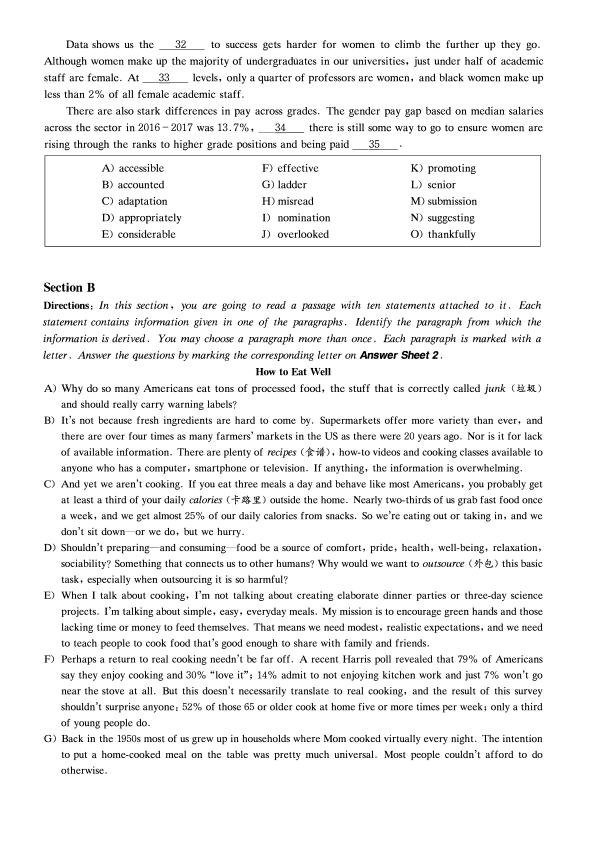

第 1 / 8 页

Part I
Writing
( 30 minutes)
Directions: For this part, you are allowed 30 minutes to write an essay on the use of translation apps. You
can start your essay with the sentence "The use of translation apps is becoming increasingly popular." You
should write at least 120 words but no more than 180 words.
Part II
Listening Comprehension
( 25 minutes)
Section A
Directions: In this section, you will hear three news reports. At the end of each news report, you will hear
two or three questions. Both the news report and the questions will be spoken only once. After you hear a
question, you must choose the best answer from the four choices marked A), B), C) and D). Then mark
the corresponding letter on Answer Sheet 1 with a single line through the centre.
Questions 1 and 2 are based on the news report you have just heard.
1. A) Watch the weather forecast.
C) Avoid travel on Wednesday.
B) Evacuate the area with the orange alert.
D) Prepare enough food and drink.
2. A) Pay more attention to the roads.
C) Bring more mobile phones.
B) Stay at a safer place.
D) Take a train home.
Questions 3 and 4 are based on the news report you have just heard.
3. A) There is only one ecosystem in Europe.
B) Romania's wetlands thrive again.
C) The wildlife in Romania isn't well protected.
D) There are 200 species of birds in Romania's wetlands.
4. A) Block the waterways.
C) Use monitoring equipment.
B) Restore the fishing ban.
D) Prohibit fishing in the next 10 years.
Questions 5 to 7 are based on the news report you have just heard.
5. A) He had a car accident.
C) He had a heart attack.
B) He attended his graduation ceremony.
D) He gave a performance in the auditorium.
6. A) What happened to him.
C) When the graduation ceremony was.
B) What date it was.
D) Where he was.
7. A) He was really touched by his classmates.
C) He couldn't remember what to say.
B) He didn't know what happened at all.
D) His parents wore caps and gowns.
Section B
Directions: In this section, you will hear two long conversations. At the end of each conversation, you will
hear four questions. Both the conversation and the questions will be spoken only once. After you hear a
question, you must choose the best answer from the four choices marked A), B), C) and D). Then mark
the corresponding letter on Answer Sheet 1 with a single line through the centre.
2020年7月大学英语四级考试真题
查看 / 复制本页文字
Part I Writing ( 30 minutes) Directions: For this part, you are allowed 30 minutes to write an essay on the use of translation apps. You can start your essay with the sentence "The use of translation apps is becoming increasingly popular." You should write at least 120 words but no more than 180 words. Part II Listening Comprehension ( 25 minutes) Section A Directions: In this section, you will hear three news reports. At the end of each news report, you will hear two or three questions. Both the news report and the questions will be spoken only once. After you hear a question, you must choose the best answer from the four choices marked A), B), C) and D). Then mark the corresponding letter on Answer Sheet 1 with a single line through the centre. Questions 1 and 2 are based on the news report you have just heard. 1. A) Watch the weather forecast. C) Avoid travel on Wednesday. B) Evacuate the area with the orange alert. D) Prepare enough food and drink. 2. A) Pay more attention to the roads. C) Bring more mobile phones. B) Stay at a safer place. D) Take a train home. Questions 3 and 4 are based on the news report you have just heard. 3. A) There is only one ecosystem in Europe. B) Romania's wetlands thrive again. C) The wildlife in Romania isn't well protected. D) There are 200 species of birds in Romania's wetlands. 4. A) Block the waterways. C) Use monitoring equipment. B) Restore the fishing ban. D) Prohibit fishing in the next 10 years. Questions 5 to 7 are based on the news report you have just heard. 5. A) He had a car accident. C) He had a heart attack. B) He attended his graduation ceremony. D) He gave a performance in the auditorium. 6. A) What happened to him. C) When the graduation ceremony was. B) What date it was. D) Where he was. 7. A) He was really touched by his classmates. C) He couldn't remember what to say. B) He didn't know what happened at all. D) His parents wore caps and gowns. Section B Directions: In this section, you will hear two long conversations. At the end of each conversation, you will hear four questions. Both the conversation and the questions will be spoken only once. After you hear a question, you must choose the best answer from the four choices marked A), B), C) and D). Then mark the corresponding letter on Answer Sheet 1 with a single line through the centre. 2020年7月大学英语四级考试真题
第 2 / 8 页
Questions 8 to 11 are based on the conversation you have just heard.
8. A) Her children's disruption.
C) A sense of isolation.
B) Quiet atmosphere.
D) Longer working hours.
9. A) It doesn't offer coffee.
C) It doesn't have free Wi-Fi.
B) It's too quiet.
D) It lacks the material he needs.
10. A) The sense of being out in the world.
C) The coffee table.
B) The coffee it provides.
D) The comfortable working condition.
11. A) People don't order anything.
B) People bring their laptops and paperwork.
C) People occupy valuable table space in quiet times.
D) People of two occupy a table for six.
Questions 12 to 15 are based on the conversation you have just heard.
12. A) She is not satisfied with the salary.
B) She is not capable of the job.
C) She often works overtime.
D) She's received a job offer from another company.
13. A) They may be considered as less loyal.
B) They won't get the promotion opportunities.
C) They should take more responsibility at work.
D) They will be given hiring priority.
14. A) She might have to do extra work everyday.
C) She might not get enough vacation.
B) She might not get a pay rise.
D) She might not gain more experience.
15. A) Experience.
C) Fortune.
B) Confidence.
D) Opportunity.
Section C
Directions: In this section, you will hear three passages. At the end of each passage, you will hear three or
four questions. Both the passage and the questions will be spoken only once. After you hear a question , you
must choose the best answer from the four choices marked A ) , B) , C ) and D ) . Then mark the
corresponding letter on Answer Sheet 1 with a single line through the centre.
Questions 16 to 18 are based on the passage you have just heard.
16. A) It's a horrible feeling.
C) It's boring and dangerous.
B) It can be a blessing.
D) It's the most comfortable state.
17. A) To be active.
B) To meet up with your friends.
C) To travel abroad.
D) To seek advice from others.
18. A) It provides a chance for people to think deeply.
B) It makes us treasure the time.
C) It enables one to identify true friends.
D) It helps us take care of problems more efficiently.
Questions 19 to 21 are based on the passage you have just heard.
19. A) He is a harsh person.
C) He is very demanding in his work.
B) He is mean to others.
D) He usually works very late.
查看 / 复制本页文字
Questions 8 to 11 are based on the conversation you have just heard. 8. A) Her children's disruption. C) A sense of isolation. B) Quiet atmosphere. D) Longer working hours. 9. A) It doesn't offer coffee. C) It doesn't have free Wi-Fi. B) It's too quiet. D) It lacks the material he needs. 10. A) The sense of being out in the world. C) The coffee table. B) The coffee it provides. D) The comfortable working condition. 11. A) People don't order anything. B) People bring their laptops and paperwork. C) People occupy valuable table space in quiet times. D) People of two occupy a table for six. Questions 12 to 15 are based on the conversation you have just heard. 12. A) She is not satisfied with the salary. B) She is not capable of the job. C) She often works overtime. D) She's received a job offer from another company. 13. A) They may be considered as less loyal. B) They won't get the promotion opportunities. C) They should take more responsibility at work. D) They will be given hiring priority. 14. A) She might have to do extra work everyday. C) She might not get enough vacation. B) She might not get a pay rise. D) She might not gain more experience. 15. A) Experience. C) Fortune. B) Confidence. D) Opportunity. Section C Directions: In this section, you will hear three passages. At the end of each passage, you will hear three or four questions. Both the passage and the questions will be spoken only once. After you hear a question , you must choose the best answer from the four choices marked A ) , B) , C ) and D ) . Then mark the corresponding letter on Answer Sheet 1 with a single line through the centre. Questions 16 to 18 are based on the passage you have just heard. 16. A) It's a horrible feeling. C) It's boring and dangerous. B) It can be a blessing. D) It's the most comfortable state. 17. A) To be active. B) To meet up with your friends. C) To travel abroad. D) To seek advice from others. 18. A) It provides a chance for people to think deeply. B) It makes us treasure the time. C) It enables one to identify true friends. D) It helps us take care of problems more efficiently. Questions 19 to 21 are based on the passage you have just heard. 19. A) He is a harsh person. C) He is very demanding in his work. B) He is mean to others. D) He usually works very late.
第 3 / 8 页
20. A) He moved out and divorced.
B) It was plagued by drugs and gang violence.
C) He lived there for 20 years.
D) His parents would move into his new house.
21. A) He was only responsible for unloading food. C) It was a hard and tedious job.
B) He had to sign his name on every label.
D) He was required to work at Friday night.
Questions 22 to 25 are based on the passage you have just heard.
22. A) By recording the time people spend on TV.
B) By tracking people's living habits.
C) By using memory and fluency tests.
D) By scanning people's brains.
23. A) Watching television for hours.
C) Reading books and magazines.
B) Playing video games.
D) Surfing the Internet.
24. A) Television viewing may be a potential factor for Alzheimer's disease.
B) Alzheimer's patients tend to watch television more than 3 hours a day.
C) Some research has confirmed the link between them.
D) Television watching is beneficial to Alzheimer's patients.
25. A) Watch television no more than 3 hours each day.
B) Balance television viewing with other contrasting activities.
C) Watch some educational TV programs.
D) Take more physical exercise.
Part ][
Section A
Reading Comprehension
( 40 minutes)
Directions: In this section, there is a passage with ten blanks. You are required to select one word for each
blank from a list of choices given in a word bank following the passage. Read the passage through carefully
before making your choices. Each choice in the bank is identified by a letter. Please mark the corresponding
letter for each item on Answer Sheet 2 with a single line through the centre. You may not use any of the
words in the bank more than once.
"Science and everyday life cannot and should not be separated. " Those were the words uttered by
pioneering British scientist Rosalind Franklin, who firmly believed that the pursuit of science should be
26
to all.
As a woman working in the first half of the 20th century, Franklin's contributions to some of the
greatest scientific discoveries of our time including the structure of DNA-were sadly
27
in her
----
lifetime.
More than 60 years after Franklin's death, we are ----
28
living in a different world, where
women play an important part in every echelon ( M--/l,.) of our society-not least in science, innovation,
higher education and research. UK universities are world leaders when it comes to advancing and
29
gender equality.
In the past decade, we have seen a
30
increase in England in the number of women accepted
----
on to full-time undergraduate degrees in science, technology, engineering and maths (Stem subjects) . And
in the last academic year, women
31
for more than half of all Stem postgraduates at UK
universities
查看 / 复制本页文字
20. A) He moved out and divorced. B) It was plagued by drugs and gang violence. C) He lived there for 20 years. D) His parents would move into his new house. 21. A) He was only responsible for unloading food. C) It was a hard and tedious job. B) He had to sign his name on every label. D) He was required to work at Friday night. Questions 22 to 25 are based on the passage you have just heard. 22. A) By recording the time people spend on TV. B) By tracking people's living habits. C) By using memory and fluency tests. D) By scanning people's brains. 23. A) Watching television for hours. C) Reading books and magazines. B) Playing video games. D) Surfing the Internet. 24. A) Television viewing may be a potential factor for Alzheimer's disease. B) Alzheimer's patients tend to watch television more than 3 hours a day. C) Some research has confirmed the link between them. D) Television watching is beneficial to Alzheimer's patients. 25. A) Watch television no more than 3 hours each day. B) Balance television viewing with other contrasting activities. C) Watch some educational TV programs. D) Take more physical exercise. Part ][ Section A Reading Comprehension ( 40 minutes) Directions: In this section, there is a passage with ten blanks. You are required to select one word for each blank from a list of choices given in a word bank following the passage. Read the passage through carefully before making your choices. Each choice in the bank is identified by a letter. Please mark the corresponding letter for each item on Answer Sheet 2 with a single line through the centre. You may not use any of the words in the bank more than once. "Science and everyday life cannot and should not be separated. " Those were the words uttered by pioneering British scientist Rosalind Franklin, who firmly believed that the pursuit of science should be 26 to all. As a woman working in the first half of the 20th century, Franklin's contributions to some of the greatest scientific discoveries of our time including the structure of DNA-were sadly 27 in her ---- lifetime. More than 60 years after Franklin's death, we are ---- 28 living in a different world, where women play an important part in every echelon ( M--/l,.) of our society-not least in science, innovation, higher education and research. UK universities are world leaders when it comes to advancing and 29 gender equality. In the past decade, we have seen a 30 increase in England in the number of women accepted ---- on to full-time undergraduate degrees in science, technology, engineering and maths (Stem subjects) . And in the last academic year, women 31 for more than half of all Stem postgraduates at UK universities
第 4 / 8 页

Data shows us the
32
to success gets harder for women to climb the further up they go.
Although women make up the majority of undergraduates in our universities, just under half of academic
staff are female. At
33
levels, only a quarter of professors are women, and black women make up
less than 2% of all female academic staff.
There are also stark differences in pay across grades. The gender pay gap based on median salaries
across the sector in 2016 - 201 7 was 13. 7 % ,
34
there is still some way to go to ensure women are
rising through the ranks to higher grade positions and being paid
35
A) accessible
F) effective
B) accounted
G) ladder
C) adaptation
H) misread
D) appropriately
I) nomination
E) considerable
J) overlooked
Section B
K) promoting
L) senior
M) submission
N) suggesting
0) thankfully
Directions: In this section, you are going to read a passage with ten statements attached to it. Each
statement contains information given in one of the paragraphs. Identify the paragraph from which the
information is derived. You may choose a paragraph more than once. Each paragraph is marked with a
letter. Answer the questions by marking the corresponding letter on Answer Sheet 2.
How to Eat Well
A) Why do so many Americans eat tons of processed food, the stuff that is correctly called junk O.iJ.&.)
and should really carry warning labels?
B) It's not because fresh ingredients are hard to come by. Supermarkets offer more variety than ever, and
there are over four times as many farmers' markets in the US as there were 20 years ago. Nor is it for lack
of available information. There are plenty of recipes ( 1:-iif-), how-to videos and cooking classes available to
anyone who has a computer, smartphone or television. If anything, the information is overwhelming.
C) And yet we aren't cooking. If you eat three meals a day and behave like most Americans, you probably get
at least a third of your daily calories ( -f £) outside the home. Nearly two-thirds of us grab fast food once
a week, and we get almost 25% of our daily calories from snacks. So we're eating out or taking in, and we
don't sit down-or we do, but we hurry.
D) Shouldn't preparing-and consuming-food be a source of comfort, pride, health, well-being, relaxation,
sociability? Something that connects us to other humans? Why would we want to outsource Ur
) this basic
task, especially when outsourcing it is so harmful?
E) When I talk about cooking, I'm not talking about creating elaborate dinner parties or three-day science
projects. I'm talking about simple, easy, everyday meals. My mission is to encourage green hands and those
lacking time or money to feed themselves. That means we need modest, realistic expectations, and we need
to teach people to cook food that's good enough to share with family and friends.
F) Perhaps a return to real cooking needn't be far off. A recent Harris poll revealed that 79% of Americans
say they enjoy cooking and 30% "love it"; 14% admit to not enjoying kitchen work and just 7% won't go
near the stove at all. But this doesn't necessarily translate to real cooking, and the result of this survey
shouldn't surprise anyone: 52% of those 65 or older cook at home five or more times per week; only a third
of young people do.
G) Back in the 1950s most of us grew up in households where Mom cooked virtually every night. The intention
to put a home-cooked meal on the table was pretty much universal. Most people couldn't afford to do
otherwise.
查看 / 复制本页文字
本页源文件的文字编码有异常。原卷显示正常；复制文字需对照原卷核查。
Data shows us the 32 to success gets harder for women to climb the further up they go. Although women make up the majority of undergraduates in our universities, just under half of academic staff are female. At 33 levels, only a quarter of professors are women, and black women make up less than 2% of all female academic staff. There are also stark differences in pay across grades. The gender pay gap based on median salaries across the sector in 2016 - 201 7 was 13. 7 % , 34 there is still some way to go to ensure women are rising through the ranks to higher grade positions and being paid 35 A) accessible F) effective B) accounted G) ladder C) adaptation H) misread D) appropriately I) nomination E) considerable J) overlooked Section B K) promoting L) senior M) submission N) suggesting 0) thankfully Directions: In this section, you are going to read a passage with ten statements attached to it. Each statement contains information given in one of the paragraphs. Identify the paragraph from which the information is derived. You may choose a paragraph more than once. Each paragraph is marked with a letter. Answer the questions by marking the corresponding letter on Answer Sheet 2. How to Eat Well A) Why do so many Americans eat tons of processed food, the stuff that is correctly called junk O.iJ.&.) and should really carry warning labels? B) It's not because fresh ingredients are hard to come by. Supermarkets offer more variety than ever, and there are over four times as many farmers' markets in the US as there were 20 years ago. Nor is it for lack of available information. There are plenty of recipes ( 1:-iif-), how-to videos and cooking classes available to anyone who has a computer, smartphone or television. If anything, the information is overwhelming. C) And yet we aren't cooking. If you eat three meals a day and behave like most Americans, you probably get at least a third of your daily calories ( -f £) outside the home. Nearly two-thirds of us grab fast food once a week, and we get almost 25% of our daily calories from snacks. So we're eating out or taking in, and we don't sit down-or we do, but we hurry. D) Shouldn't preparing-and consuming-food be a source of comfort, pride, health, well-being, relaxation, sociability? Something that connects us to other humans? Why would we want to outsource Ur ) this basic task, especially when outsourcing it is so harmful? E) When I talk about cooking, I'm not talking about creating elaborate dinner parties or three-day science projects. I'm talking about simple, easy, everyday meals. My mission is to encourage green hands and those lacking time or money to feed themselves. That means we need modest, realistic expectations, and we need to teach people to cook food that's good enough to share with family and friends. F) Perhaps a return to real cooking needn't be far off. A recent Harris poll revealed that 79% of Americans say they enjoy cooking and 30% "love it"; 14% admit to not enjoying kitchen work and just 7% won't go near the stove at all. But this doesn't necessarily translate to real cooking, and the result of this survey shouldn't surprise anyone: 52% of those 65 or older cook at home five or more times per week; only a third of young people do. G) Back in the 1950s most of us grew up in households where Mom cooked virtually every night. The intention to put a home-cooked meal on the table was pretty much universal. Most people couldn't afford to do otherwise.
第 5 / 8 页
H) Although frozen dinners were invented in the '40s, their popularity didn't boom until televisions became
popular a decade or so later. Since then, packaged, pre-prepared meals have been what's for dinner. The
microwave and fast-food chains were the biggest catalysts ( 111t Jr ) , but the big food companies-which
want to sell anything except the raw ingredients that go into cooking-made the home cook an endangered
species.
I) Still, I find it strange that only a third of young people report preparing meals at home regularly. Isn't this
the same crowd that rails against processed junk and champions craft cooking? And isn't this the generation
who say they're concerned about their health and the well-being of the planet? If these are truly the values
of many young people, then their behavior doesn't match their beliefs.
J) There have been half-hearted but well-publicized efforts by some food companies to reduce calories in their
processed foods, but the Standard American Diet is still the polar opposite of the healthy, mostly plant
based diet that just about every expert says we should be eating. Considering that the government's
standards are not nearly ambitious enough, the picture is clear: by not cooking at home, we're not eating
the right things, and the consequences are hard to overstate.
K) To help quantify ( i 1t) the costs of a poor diet, I recently tried to estimate this impact in terms of a most
famous food, the burger Ux..1!). I concluded that the profit from burgers is more than offset C.:f)jlf) by
the damage they cause in health problems and environmental harm.
L) Cooking real food is the best defense-not to mention that any meal you're likely to eat at home contains
about 200 fewer calories than one you would eat in a restaurant.
M) To those Americans for whom money is a concern, my advice is simple: Buy what you can afford, and cook
it yourself. The common prescription is to primarily shop the grocery store, since that's where fresh
produce, meat and seafood, and dairy are. And to save money and still eat well you don't need local,
organic ingredients; all you need is real food. I'm not saying local food isn't better; it is. But there is plenty
of decent food in the grocery stores.
N) The other sections you should get to know are the frozen foods and the canned goods. Frozen produce is still
produce; canned tomatoes are still tomatoes. Just make sure you're getting real food without tons of added
salt or sugar. Ask yourself, would Grandma consider this food? Does it look like something that might occur
in nature? It's pretty much common sense: you want to buy food, not unidentifiable foodlike objects.
0) You don't have to hit the grocery store daily, nor do you need an abundance of skill. Since fewer than half
of Americans say they cook at an intermediate level and only 20% describe their cooking skills as advanced,
the crisis is one of confidence. And the only remedy for that is practice. There's nothing mysterious about
cooking the evening meal. You just have to do a little thinking ahead and redefine what qualifies as dinner.
Like any skill, cooking gets easier as you do it more; every time you cook, you advance your level of skills.
Someday you won't even need recipes. My advice is that you not pay attention to the number of steps and
ingredients, because they can be deceiving.
P) Time, I realize, is the biggest obstacle to cooking for most people. You must adjust your priorities to find
time to cook. For instance, you can move a TV to the kitchen and watch your favorite shows while you're
standing at the sink. No one is asking you to give up activities you like, but if you're watching food shows on
TV, try cooking instead.
36. Cooking benefits people in many ways and enables them to connect with one another.
37. Abundant information about cooking is available either online or on TV.
查看 / 复制本页文字
本页源文件的文字编码有异常。原卷显示正常；复制文字需对照原卷核查。
H) Although frozen dinners were invented in the '40s, their popularity didn't boom until televisions became popular a decade or so later. Since then, packaged, pre-prepared meals have been what's for dinner. The microwave and fast-food chains were the biggest catalysts ( 111t Jr ) , but the big food companies-which want to sell anything except the raw ingredients that go into cooking-made the home cook an endangered species. I) Still, I find it strange that only a third of young people report preparing meals at home regularly. Isn't this the same crowd that rails against processed junk and champions craft cooking? And isn't this the generation who say they're concerned about their health and the well-being of the planet? If these are truly the values of many young people, then their behavior doesn't match their beliefs. J) There have been half-hearted but well-publicized efforts by some food companies to reduce calories in their processed foods, but the Standard American Diet is still the polar opposite of the healthy, mostly plant based diet that just about every expert says we should be eating. Considering that the government's standards are not nearly ambitious enough, the picture is clear: by not cooking at home, we're not eating the right things, and the consequences are hard to overstate. K) To help quantify ( i 1t) the costs of a poor diet, I recently tried to estimate this impact in terms of a most famous food, the burger Ux..1!). I concluded that the profit from burgers is more than offset C.:f)jlf) by the damage they cause in health problems and environmental harm. L) Cooking real food is the best defense-not to mention that any meal you're likely to eat at home contains about 200 fewer calories than one you would eat in a restaurant. M) To those Americans for whom money is a concern, my advice is simple: Buy what you can afford, and cook it yourself. The common prescription is to primarily shop the grocery store, since that's where fresh produce, meat and seafood, and dairy are. And to save money and still eat well you don't need local, organic ingredients; all you need is real food. I'm not saying local food isn't better; it is. But there is plenty of decent food in the grocery stores. N) The other sections you should get to know are the frozen foods and the canned goods. Frozen produce is still produce; canned tomatoes are still tomatoes. Just make sure you're getting real food without tons of added salt or sugar. Ask yourself, would Grandma consider this food? Does it look like something that might occur in nature? It's pretty much common sense: you want to buy food, not unidentifiable foodlike objects. 0) You don't have to hit the grocery store daily, nor do you need an abundance of skill. Since fewer than half of Americans say they cook at an intermediate level and only 20% describe their cooking skills as advanced, the crisis is one of confidence. And the only remedy for that is practice. There's nothing mysterious about cooking the evening meal. You just have to do a little thinking ahead and redefine what qualifies as dinner. Like any skill, cooking gets easier as you do it more; every time you cook, you advance your level of skills. Someday you won't even need recipes. My advice is that you not pay attention to the number of steps and ingredients, because they can be deceiving. P) Time, I realize, is the biggest obstacle to cooking for most people. You must adjust your priorities to find time to cook. For instance, you can move a TV to the kitchen and watch your favorite shows while you're standing at the sink. No one is asking you to give up activities you like, but if you're watching food shows on TV, try cooking instead. 36. Cooking benefits people in many ways and enables them to connect with one another. 37. Abundant information about cooking is available either online or on TV.
第 6 / 8 页
38. Young people do less cooking at home than the elderly these days.
39. Cooking skills can be improved with practice.
40. In the mid-20th century, most families ate dinner at home instead of eating out.
41. Even those short of time or money should be encouraged to cook for themselves and their family.
42. Eating food not cooked by ourselves can cause serious consequences.
43. To eat well and still save money, people should buy fresh food and cook it themselves.
44. We get a fairly large portion of calories from fast food and snacks.
45. The popularity of TV led to the popularity of frozen food.
Section C
Directions: There are 2 passages in this section. Each passage is followed by some questions or unfinished
statements. For each of them there are four choices marked A) , B) , C) and D). You should decide on the
best choice and mark the corresponding letter on Answer Sheet 2 with a single line through the centre.
Passage One
Questions 46 to 50 are based on the following passage.
The wallet is heading for extinction. As a day-to-day essential, it will die off with the generation who
read print newspapers. The kind of shopping-where you hand over notes and count out change in
return-now happens only in the most minor of our retail encounters, like buying a bar of chocolate or a
pint of milk, from a corner shop. At the shops where you spend any real money, that money is
increasingly abstracted. And this is more and more true, the higher up the scale you go. At the most
cutting-edge retail stores-Victoria Beckham on Dover Street, for instance-you don't go and stand at any
kind of cash register, when you decide to pay. The staff are equipped with iPads to take your payment
while you relax on a sofa.
Which is nothing more or less than excellent service, if you have the money. But across society, the
abstraction of the idea of cash makes me uneasy. Maybe I'm just old-fashioned. But earning money isn't
quick or easy for most of us. Isn't it a bit weird that spending it should happen in half a blink (!1£Htl) of an
eye? Doesn't a wallet-that time-honoured Friday-night feeling of pleasing, promising fatness-represent
something that matters?
But I'll leave the economics to the experts. What bothers me about the death of the wallet is the
change it represents in our physical environment. Everything about the look and feel of a wallet-the way
the fastenings and materials wear and tear and loosen with age, the plastic and paper and gold and silver,
and handwritten phone numbers and printed cinema tickets-is the very opposite of what our world is
becoming. The opposite of a wallet is a smartphone or an iPad. The rounded edges, cool glass, smooth
and unknowable as a pebble ( | �r ;G ) . Instead of digging through pieces of paper and peering into
corners, we move our fingers left and right. No more counting out coins. Show your wallet, if you still
have one. It may not be here much longer.
46. What is happening to the wallet?
A) It is disappearing.
B) It is being fattened.
C) It is becoming costly.
D) It is changing in style.
查看 / 复制本页文字
本页源文件的文字编码有异常。原卷显示正常；复制文字需对照原卷核查。
38. Young people do less cooking at home than the elderly these days. 39. Cooking skills can be improved with practice. 40. In the mid-20th century, most families ate dinner at home instead of eating out. 41. Even those short of time or money should be encouraged to cook for themselves and their family. 42. Eating food not cooked by ourselves can cause serious consequences. 43. To eat well and still save money, people should buy fresh food and cook it themselves. 44. We get a fairly large portion of calories from fast food and snacks. 45. The popularity of TV led to the popularity of frozen food. Section C Directions: There are 2 passages in this section. Each passage is followed by some questions or unfinished statements. For each of them there are four choices marked A) , B) , C) and D). You should decide on the best choice and mark the corresponding letter on Answer Sheet 2 with a single line through the centre. Passage One Questions 46 to 50 are based on the following passage. The wallet is heading for extinction. As a day-to-day essential, it will die off with the generation who read print newspapers. The kind of shopping-where you hand over notes and count out change in return-now happens only in the most minor of our retail encounters, like buying a bar of chocolate or a pint of milk, from a corner shop. At the shops where you spend any real money, that money is increasingly abstracted. And this is more and more true, the higher up the scale you go. At the most cutting-edge retail stores-Victoria Beckham on Dover Street, for instance-you don't go and stand at any kind of cash register, when you decide to pay. The staff are equipped with iPads to take your payment while you relax on a sofa. Which is nothing more or less than excellent service, if you have the money. But across society, the abstraction of the idea of cash makes me uneasy. Maybe I'm just old-fashioned. But earning money isn't quick or easy for most of us. Isn't it a bit weird that spending it should happen in half a blink (!1£Htl) of an eye? Doesn't a wallet-that time-honoured Friday-night feeling of pleasing, promising fatness-represent something that matters? But I'll leave the economics to the experts. What bothers me about the death of the wallet is the change it represents in our physical environment. Everything about the look and feel of a wallet-the way the fastenings and materials wear and tear and loosen with age, the plastic and paper and gold and silver, and handwritten phone numbers and printed cinema tickets-is the very opposite of what our world is becoming. The opposite of a wallet is a smartphone or an iPad. The rounded edges, cool glass, smooth and unknowable as a pebble ( | �r ;G ) . Instead of digging through pieces of paper and peering into corners, we move our fingers left and right. No more counting out coins. Show your wallet, if you still have one. It may not be here much longer. 46. What is happening to the wallet? A) It is disappearing. B) It is being fattened. C) It is becoming costly. D) It is changing in style.
第 7 / 8 页
4 7. How are business transactions done in big modern stores?
A) Individually.
C) In the abstract.
B) Electronically.
D) Via a cash register.
48. What makes the author feel uncomfortable nowadays?
A) Saving money is becoming a thing of the past.
B) The pleasing Friday-night feeling is fading.
C) Earning money is getting more difficult.
D) Spending money is so fast and easy.
49. Why does the author choose to write about what's happening to the wallet?
A) It represents a change in the modern world.
B) It has something to do with everybody's life.
C) It marks the end of a time-honoured tradition.
D) It is the concern of contemporary economists.
50. What can we infer from the passage about the author?
A) He is resistant to social changes.
B) He is against technological progress.
C) He feels reluctant to part with the traditional wallet.
D) He feels insecure in the ever-changing modern world.
Passage Two
Questions 51 to 55 are based on the following passage.
It's late in the evening: time to close the book and turn off the computer. You're done for the day.
What you may not realize, however, is that the learning process actually continues-in your dreams.
It might sound like science fiction, but researchers are increasingly focusing on the relationship
between the knowledge and skills our brains absorb during the day and the fragmented, often bizarre
imaginings they generate at night. Scientists have found that dreaming about a task we've learned is
associated with improved performance in that activity (suggesting that there's some truth to the popular
notion that we're "getting" a foreign language once we begin dreaming in it) . What's more, researchers
are coming to recognize that dreaming is an essential part of understanding, organizing and retaining what
we learn.
While we sleep, research indicates, the brain replays the patterns of activity it experienced during
waking hours, allowing us to enter what one psychologist calls a neural Ut ň ʼn) virtual reality. A vivid
example of such replay can be seen in a video researchers made recently about sleep disorders. They taught
a series of dance moves to a group of patients with conditions like sleepwalking, in which the sleeper
engages in the kind physical movement that does not normally occur during sleep. They then videotaped
the subjects as they slept. Lying in bed, eyes closed, one female patient on the tape performs the dance
moves she learned earlier.
This shows that while our bodies are at rest, our brains are drawing what's important from the
information and events we've recently encountered, then integrating that data into the vast store of what
查看 / 复制本页文字
4 7. How are business transactions done in big modern stores? A) Individually. C) In the abstract. B) Electronically. D) Via a cash register. 48. What makes the author feel uncomfortable nowadays? A) Saving money is becoming a thing of the past. B) The pleasing Friday-night feeling is fading. C) Earning money is getting more difficult. D) Spending money is so fast and easy. 49. Why does the author choose to write about what's happening to the wallet? A) It represents a change in the modern world. B) It has something to do with everybody's life. C) It marks the end of a time-honoured tradition. D) It is the concern of contemporary economists. 50. What can we infer from the passage about the author? A) He is resistant to social changes. B) He is against technological progress. C) He feels reluctant to part with the traditional wallet. D) He feels insecure in the ever-changing modern world. Passage Two Questions 51 to 55 are based on the following passage. It's late in the evening: time to close the book and turn off the computer. You're done for the day. What you may not realize, however, is that the learning process actually continues-in your dreams. It might sound like science fiction, but researchers are increasingly focusing on the relationship between the knowledge and skills our brains absorb during the day and the fragmented, often bizarre imaginings they generate at night. Scientists have found that dreaming about a task we've learned is associated with improved performance in that activity (suggesting that there's some truth to the popular notion that we're "getting" a foreign language once we begin dreaming in it) . What's more, researchers are coming to recognize that dreaming is an essential part of understanding, organizing and retaining what we learn. While we sleep, research indicates, the brain replays the patterns of activity it experienced during waking hours, allowing us to enter what one psychologist calls a neural Ut ň ʼn) virtual reality. A vivid example of such replay can be seen in a video researchers made recently about sleep disorders. They taught a series of dance moves to a group of patients with conditions like sleepwalking, in which the sleeper engages in the kind physical movement that does not normally occur during sleep. They then videotaped the subjects as they slept. Lying in bed, eyes closed, one female patient on the tape performs the dance moves she learned earlier. This shows that while our bodies are at rest, our brains are drawing what's important from the information and events we've recently encountered, then integrating that data into the vast store of what
第 8 / 8 页
we already know. In a 2010 study, researchers at Harvard Medical School reported that college students
who dreamed about a computer maze (i!. 't) task they had learned showed a 10-fold improvement in their
ability to find their way through the maze compared with participants who did not dream about the task.
Robert Stickgold, one of the Harvard researchers, suggests that studying right before bedtime or
taking a nap following a study session in the afternoon might increase the odds of dreaming about the
material. Think about that as your head hits the pillow tonight.
51. What is scientists' finding about dreaming?
A) It involves disconnected, weird images.
B) It resembles fragments of science fiction.
C) Dreaming about a learned task betters its performance.
D) Dreaming about things being learned disturbs one's sleep.
52. What happens when one enters a dream state?
A) The body continues to act as if the sleeper were awake.
B) The neural activity of the brain will become intensified.
C) The brain behaves as if it were playing a virtual reality video game.
D) The brain once again experiences the learning activities of the day.
53. What does the brain do while we are sleeping?
A) It systematizes all the data collected during the day.
B) It substitutes old information with new data.
C) It processes and absorbs newly acquired data.
D) It classifies information and places it in different files.
54. What does Robert Stickgold suggest about enhancing learning?
A) Having a little sleep after studying in the day.
B) Staying up late before going to bed.
C) Having a dream about anything.
D) Thinking about the odds of dreaming about the material.
55. What can be inferred about dreaming from the passage?
A) We may enhance our learning through dreaming.
B) Dreaming improves your language ability.
C) All sleepwalkers perform dance moves when they are sleeping.
D) Taking a nap after learning can help you find the way through the maze.
Part N
Translation
( 30 minutes)
Directions: For this part , you are allowed 30 minutes to translate a passage from Chinese into English. You
should write your answer on Answer Sheet 2.
4i- 'f �.*- e.,
2, 000 J Jf-a'-J JJi :t_, *-¥-ii.LH-t*Ŋ;t-a'-JJ-tk. 1R, t&l6 4i-1tlJ J-tl!.IR .H, tl! JJi!. 1 J!-ŋ J-tl!.
-};"4-f@.a'-J:#Ō o
11tj(_efft, ōA_*7JmA_m) Ŏ,1i-*Jll, :t-f- 'f fa} iiŏŐ----a'-J y(_e o
11t y(_e fft, A1f1 "f vA:fi
.t,% m c, a'-J o 11-*"ii Ji:] , őŒ, 1JUt*7 Jt1-t!!, IJic.#, m c, ;! 1:f- o A 1f1 "f vA -JllJl-•tf J-tl!.Jfffr œ, -Jll-f. Ŕ ŕJi- o
查看 / 复制本页文字
本页源文件的文字编码有异常。原卷显示正常；复制文字需对照原卷核查。
we already know. In a 2010 study, researchers at Harvard Medical School reported that college students who dreamed about a computer maze (i!. 't) task they had learned showed a 10-fold improvement in their ability to find their way through the maze compared with participants who did not dream about the task. Robert Stickgold, one of the Harvard researchers, suggests that studying right before bedtime or taking a nap following a study session in the afternoon might increase the odds of dreaming about the material. Think about that as your head hits the pillow tonight. 51. What is scientists' finding about dreaming? A) It involves disconnected, weird images. B) It resembles fragments of science fiction. C) Dreaming about a learned task betters its performance. D) Dreaming about things being learned disturbs one's sleep. 52. What happens when one enters a dream state? A) The body continues to act as if the sleeper were awake. B) The neural activity of the brain will become intensified. C) The brain behaves as if it were playing a virtual reality video game. D) The brain once again experiences the learning activities of the day. 53. What does the brain do while we are sleeping? A) It systematizes all the data collected during the day. B) It substitutes old information with new data. C) It processes and absorbs newly acquired data. D) It classifies information and places it in different files. 54. What does Robert Stickgold suggest about enhancing learning? A) Having a little sleep after studying in the day. B) Staying up late before going to bed. C) Having a dream about anything. D) Thinking about the odds of dreaming about the material. 55. What can be inferred about dreaming from the passage? A) We may enhance our learning through dreaming. B) Dreaming improves your language ability. C) All sleepwalkers perform dance moves when they are sleeping. D) Taking a nap after learning can help you find the way through the maze. Part N Translation ( 30 minutes) Directions: For this part , you are allowed 30 minutes to translate a passage from Chinese into English. You should write your answer on Answer Sheet 2. 4i- 'f �.*- e., 2, 000 J Jf-a'-J JJi :t_, *-¥-ii.LH-t*Ŋ;t-a'-JJ-tk. 1R, t&l6 4i-1tlJ J-tl!.IR .H, tl! JJi!. 1 J!-ŋ J-tl!. -};"4-f@.a'-J:#Ō o 11tj(_efft, ōA_*7JmA_m) Ŏ,1i-*Jll, :t-f- 'f fa} iiŏŐ----a'-J y(_e o 11t y(_e fft, A1f1 "f vA:fi .t,% m c, a'-J o 11-*"ii Ji:] , őŒ, 1JUt*7 Jt1-t!!, IJic.#, m c, ;! 1:f- o A 1f1 "f vA -JllJl-•tf J-tl!.Jfffr œ, -Jll-f. Ŕ ŕJi- o